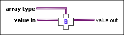

Assert Array Dimension Count VI
Owning Palette: Assert Type VIs and Functions
Requires: Base Development System
Breaks the calling VI unless value in is an array with the same number of dimensions as array type.
To check if each dimension has the same size, use the Assert Array Dimension Sizes VI.
This VI does nothing at run time. Use this VI in conjunction with the Type Specialization structure to customize sections of code in a malleable VI (.vim) for certain array types or to force a malleable VI to accept certain array types only.

 Add to the block diagram Add to the block diagram |
 Find on the palette Find on the palette |